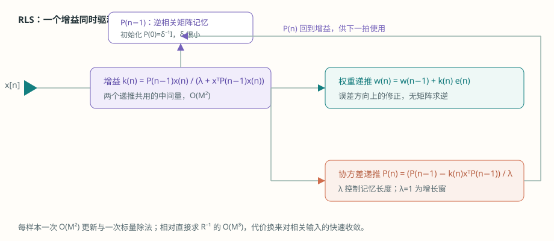
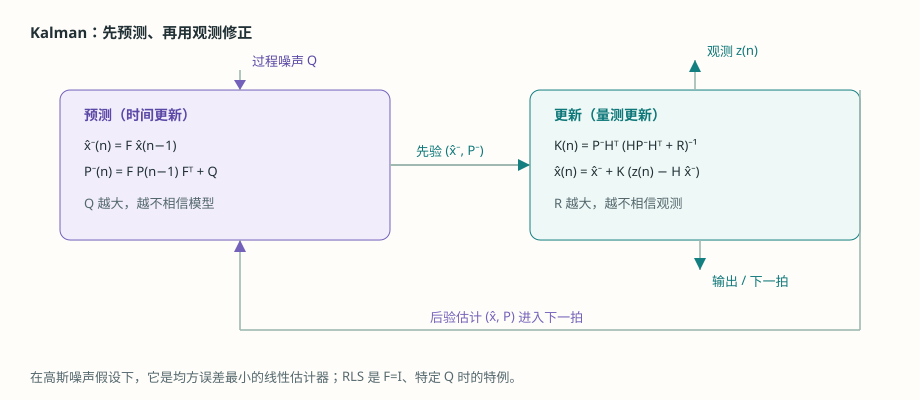
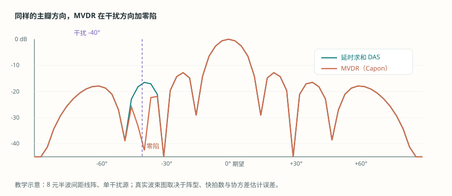

Signal · System · Insight / 16
高级自适应算法：RLS、Kalman 与 MVDR
当输入高度相关、噪声统计未知或需要在干扰方向“挖零陷”时，只靠 LMS 往往太慢；用更多结构换取更快的收敛。
LMS 为什么在有色输入下变慢？
第 15 章的 LMS 用瞬时梯度更新权重，每个样本只做 O(M) 次乘法，代价低、数值稳。但它的收敛速度由输入自相关矩阵 R = E[x(n)xᵀ(n)] 的特征值散布决定：最慢的收敛模式的时间常数正比于 1/(μ λ_min)。当输入是强相关的有色信号（例如一个极点靠近单位圆的 AR(1) 过程），λ_min 远小于 λ_max，LMS 就会慢得难以接受。
把 R 的特征值按大小排序 λ_1 ≥ λ_2 ≥ … ≥ λ_M > 0，定义条件数 κ = λ_max / λ_min。LMS 的全部收敛时间由 κ 放大，而 LS/RLS 类算法对这种散布不敏感，收敛大约只需 M 到 2M 个样本。代价是每样本的复杂度升到 O(M²)。
本章按“加入的结构越来越多”排序：RLS 把最小二乘写成递推，用历史数据白化输入；Kalman 额外引入状态演化模型，在噪声统计已知时给出最优线性估计；MVDR 把同样的自适应思想从时间节拍搬到天线或麦克风的空间位置，在干扰方向形成零陷。
RLS：把最小二乘写成递推
最小二乘（LS）不再最小化误差的统计期望，而是最小化从起始到当前时刻的加权平方和。遗忘因子 λ 满足 0 < λ ≤ 1，第 i 个误差的权重是 λ^{n−i}：λ 越接近 1，记忆越长、稳态越稳；λ 越小，越看重近期误差、跟踪越快，但稳态噪声更大。
式（1）：n 从 1 递增；e(i) 是第 i 步的先验误差。
若在每一步都求导置零，会得到正规方程 R(n) w(n) = p(n)，其中 R(n) = Σ λ^{n−i} x(i)xᵀ(i)、p(n) = Σ λ^{n−i} d(i)x(i)。直接求逆是 O(M³)，不适合实时运行。RLS 的关键是用矩阵求逆引理直接递推 P(n) = R⁻¹(n)，把每步代价降到 O(M²)。三类递推式如下。
式（2）：分母为标量，因此避免了对矩阵整体求逆。

k(n) 同时驱动两条递推：它沿误差方向修正权重，又用于收缩协方差矩阵。更新后的 P(n) 回到下一拍的增益计算，因此 P 的初始化和遗忘因子会共同影响数值行为。先验误差 e(n) = d(n) − wᵀ(n−1)x(n) 先算，再由增益更新权重；协方差则用同一增益和输入向量收缩。两条递推式写作：
式（3）：与 LMS 形式相似，但增益是 M 维向量，而非标量步长 μ。
式（4）：λ=1 时为增长窗，P 随数据增多而收缩；λ<1 时保留有限记忆。
本仓库的 16_rls.py 在有色输入（AR(1)，极点 0.9）上对比了二者：第 150 个样本处，LMS 的系数误差约为 0.17，而 RLS 约为 0.016——这正是 κ 造成差距的直接体现。
Kalman：预测与更新的两步循环
RLS 把待估计量当成一组固定系数。若系统本身在演化（目标在移动、姿态在变化），更自然的做法是给状态一个演化模型。Kalman 滤波器把问题写成状态空间：
式（5）：过程噪声 w ~ N(0,Q)，观测噪声 v ~ N(0,R)；F 是状态转移矩阵，H 是观测矩阵。
每一步分两个阶段。预测用 F 把上一拍的后验估计外推，并把误差协方差按 F P Fᵀ 放大，再加上过程噪声 Q：
式（6）：上标 − 表示修正前的先验量（prior）。
更新用新息 z(n) − H x̂⁻(n) 修正先验。Kalman 增益 K 自动在“相信模型”与“相信观测”之间加权：观测噪声 R 小则增益大、更信观测；先验协方差 P⁻ 小则增益小、更信模型。
式（7）：只需求 H P⁻ Hᵀ + R 的逆；当观测维数很小时，这远小于滤波器状态维数。

Q 放大不确定性；更新步用观测 z(n)、矩阵 H 与噪声 R 修正估计并收缩协方差。输出后验估计，再进入下一拍。在高斯噪声假设下，Kalman 滤波器是均方误差最小的线性估计器。把待估系数 w(n) 当作状态变量、取 F=I 并选择相应的 Q，RLS 就成为 Kalman 的一个特例——两者的增益递推结构完全同构。
MVDR：把自适应从时域搬到空域
把“不同时间的延迟节拍”换成“不同天线或麦克风的空间位置”，自适应滤波就变成了阵列信号处理。对均匀线阵，来自角度 θ 的远场信号在各阵元上相差一个与阵元间距和波长相关的相位，这些相位构成导向矢量 a(θ)。空域滤波就是给各阵元乘上复权重 w 再求和。
延时求和（DAS）用固定权重把主瓣对准期望方向，但它对旁瓣内的强干扰几乎无能为力。MVDR（最小方差无失真响应，又称 Capon）改成：在保持期望方向单位增益的前提下，最小化阵列输出的总功率，从而自动把零陷放到干扰方向。
式（8）：R = E[y yᴴ] 是接收数据协方差矩阵，θ₀ 是期望方向；上标 H 表示共轭转置。
这个约束问题有闭式解。拉格朗日乘子法给出：
式（9）：分母是标量，保证 wᴴa(θ₀)=1。注意解显式依赖 R⁻¹。

R，而不是预先写死的旁瓣形状。| 波束形成方法 | 干扰抑制 | 需要 DOA 先验 | 计算量 | 鲁棒性 |
|---|---|---|---|---|
| 延时求和 DAS | 弱（固定旁瓣） | 否 | O(M) | 高 |
| MVDR / Capon | 强（自适应零陷） | 是（期望方向） | O(M³) 求逆 | 中等，对导向矢量误差敏感 |
| LCMV | 更强（多约束） | 是 | O(M³) | 较高，可约束多个方向 |
实时系统里直接对 R 求逆不可接受。常见做法是用 RLS 式递推更新 R⁻¹，或改用广义旁瓣相消器（GSC）把约束问题变成无约束问题，再用 LMS 求解。注意本图的零陷依赖于较准的 a(θ₀)：导向矢量失配时，MVDR 会把自己的零陷“对准错误位置”，性能反而可能不如稳健的 DAS。这属于教学示意（8 元半波间距线阵、单干扰源），不代表特定硬件指标。
交互：过程噪声与目标跟踪
下面用一个一维匀速目标演示 Q 的作用。真值（紫色）先以固定速度运动，到第 60 个样本时改变速度（机动）；带噪观测（浅色点）叠加了固定的观测噪声；Kalman 估计（青色）由滑块选择的 Q 决定。拖动滑块可以同时看到平滑程度与机动后的滞后如何权衡。
动手验证：选择过程噪声强度 Q
观测噪声固定 R=6.25；曲线为确定性伪随机序列（seed 2024）。当 JS 关闭时，FIGURE 02 的预测—更新循环仍可独立理解原理。
下面的代码片段给出 RLS 的核心递推；完整可运行实验见 examples/16_rls.py，本地运行 python examples/16_rls.py。
# RLS 核心递推（完整可运行版见 examples/16_rls.py）
Px = [sum(P[i][j] * xv[j] for j in range(M)) for i in range(M)]
denom = lam + sum(xv[i] * Px[i] for i in range(M))
k = [v / denom for v in Px] # 增益向量 k(n)
e = d[n] - sum(w[i] * xv[i] for i in range(M))
w = [w[i] + k[i] * e for i in range(M)] # 权重递推
P = [[(P[i][j] - k[i] * Px[j]) / lam for j in range(M)] for i in range(M)]边界与失效模式
- RLS 不是无条件稳定：
P的初始化、遗忘因子与有限精度会共同影响数值行为；工程上需监控其正定性，或改用平方根/QR 形式。 - 遗忘因子引入稳态误差：
λ<1才能跟踪时变系统，但它也把稳态误差抬高；λ的选择是跟踪能力与平稳精度的折中。 - Kalman 依赖模型：当
F、H、Q、R与真实系统不匹配时，估计会有偏或发散；Q过小是最常见的滞后原因。 - MVDR 对导向矢量误差敏感：期望方向或阵列校准不准时，零陷可能偏离干扰方向，性能未必优于稳健的 DAS。
- 协方差估计需要足够快拍：用样本协方差替代理论
R时，若快拍数不远大于阵元数，R̂会病态，零陷变浅甚至消失。
自检：为什么“RLS 比 LMS 收敛快”不等于“RLS 最终误差一定更小”？在 Kalman 里，把 R 增大而保持 Q 不变，增益 K 会变大还是变小？
参考资料与接口
- MIT OCW · Discrete-Time Signal Processing：自适应滤波、RLS 递推与增值（矩阵求逆引理）的推导。
- R. E. Kalman (1960) · A New Approach to Linear Filtering and Prediction Problems：预测—更新循环与最优线性估计的原始文献。
- J. Capon (1969) · High-Resolution Frequency-Wavenumber Spectrum Analysis：MVDR（Capon）波束形成的原始文献。
- SciPy · lfilter：固定系数滤波，可作为自适应滤波的对照基线。